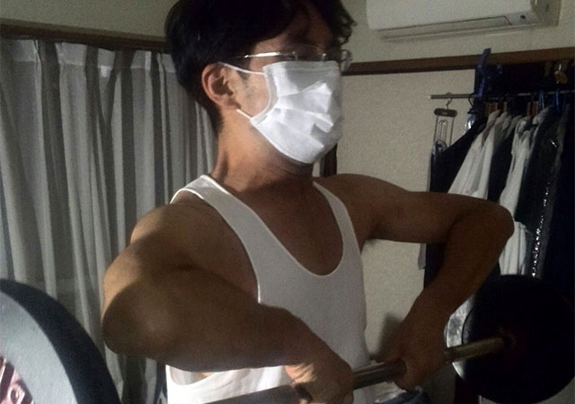

きっかけは小さくても
最近、仕事から帰るとレンタルDVD鑑賞をするのがお決まりの日課です。
実はわざわざ映画だのドラマだのを借りて観るということはあまりしません。
しかし、もう２週間ぐらいこの生活を続けています。
理由は至ってシンプル。
大勢で食事をしている時に、ふとある女性が「MOZU（小説を原作とする刑事サスペンスもの）って面白いですよね」と言ったことが頭に残っていたのです。
たしかに、ちらっとテレビで予告編を見たときなど、気にはなっていたのです。
もともとサスペンスなどは好きで、しかも主演の西島秀俊もカッコイイ。
と、思いつつも全く行動しませんでした。
それはプレステ３が壊れてしまったから。あのゲーム機はゲーム機兼DVDプレイヤーだったものですから、それが壊れたイコールDVDも見られない、という図式です。
そんなときにその女性の何気ない言葉が、意外にも重い腰を上げさせたのでした。
まあ、ゲーム自体はもうほとんどやりませんから、とりあえず安めのDVDプレイヤーを購入したわけです。
ということで、立て続けに「MOZU」それから同じく気になっていたドラマ「家族狩り」を観たというところです。
ああいう色んな因果がからんだサスペンスって、止まらないですよね（汗）。
今日は２話分だけ観よう、などと最初は思っているのですが、気がついたら朝方までどっぷりハマってしまうのです。
ここにもまた一人
実は、同じく小さなきっかけからガラッと生活習慣が変わってしまった人物がいます。
私のブログでたびたび登場するＳ教室長（⇒日記～継続は力なり～）です。
以前のブログでITC（⇒とある秋の日記）を立ち上げたことはご報告しましたが、これが真面目に続いておりまして、特に会員No.1の彼は週３ぐらいのペースで私のうちで肉体を鍛えております。

一度、私が風邪をひき彼だけがトレーニングしていた日があったのですが、そのときの彼の言葉が印象的でした。
最後の腕立て伏せが終わりバタッと倒れ込んだ彼は、息を切らしながらこう言ったのです。
「俺のせいじゃない、俺のせいじゃないんだ…」
要するに、こんなに苦しい思いをしているのはなぜなんだ！という自分への苛立ちです。
彼は一度手を出したものは簡単にはやめません。
最近始めたゴルフでも朝起きが苦手なのに休日のたびに打ちっぱなしに出かけています。
なぜそんなに熱心なのか。
彼曰く、「ゴルフはサボったらすぐに下手になる。そうしたら今までの練習が無駄になる」
これは憶測ですが、彼は一度筋トレを始めてしまったからには（しかも効果を実感し始めている）、安易にやめたらもったいない、と考えているに違いありません。
そのように小さなきっかけからどっぷりと苦しいトレーニング道に入り込んでしまった自分の運命を呪った、そんな一言だったような気がします。
では、またいつか我々の活動をご報告します！